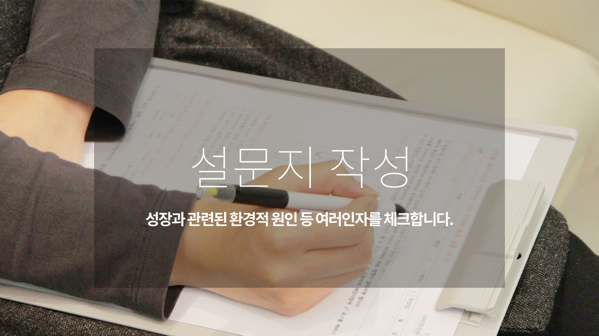
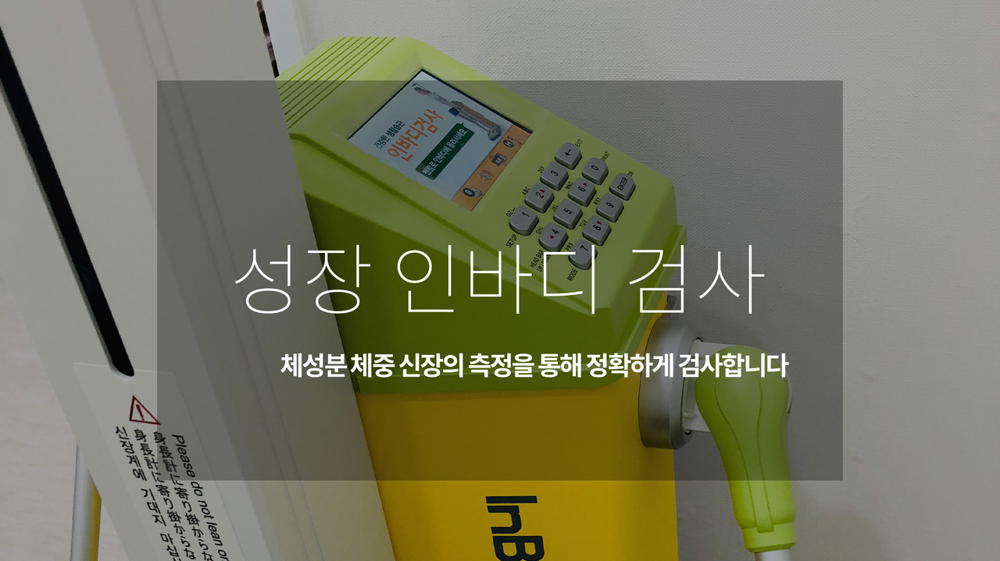
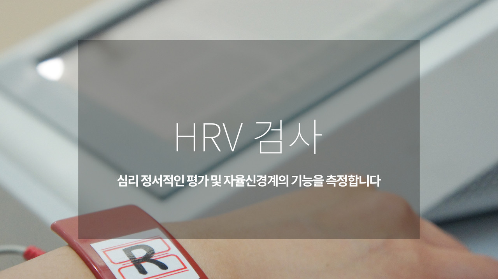
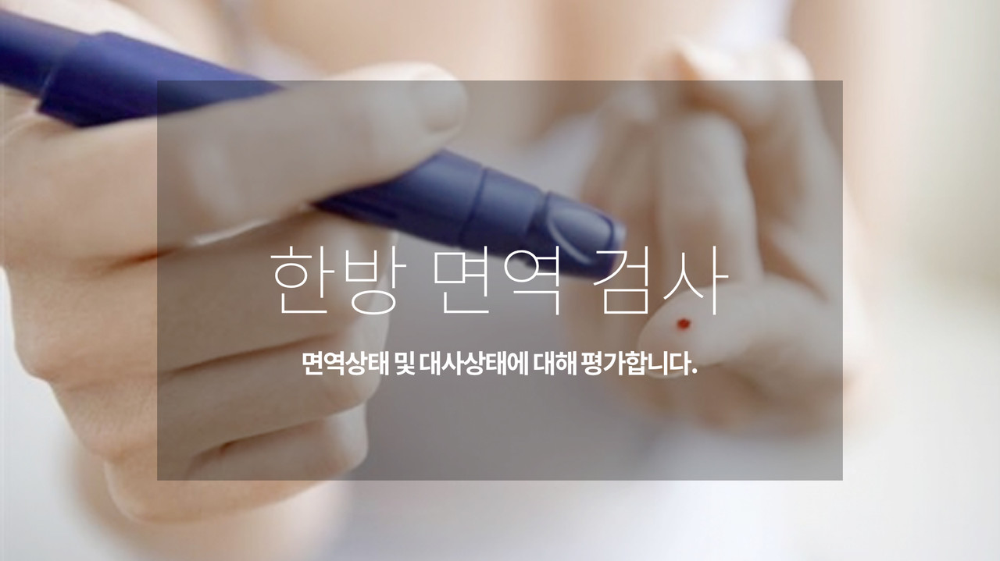

성장 기록을 바탕으로 필요한 평가를 정합니다.
- 01기록 확인
- 02필요한 검사
- 03경과 비교
| 구분 | 살펴볼 점 | 알려주실 내용 |
|---|---|---|
| 측정 기록 | 날짜에 따른 키·체중 | 학교·영유아 검진 기록 |
| 상담과 진찰 | 생활과 성장 과정 | 수면·식사·활동 모습 |
| 검사 확인 | 기존 검사와 필요한 평가 상담 | 검사 결과와 의료진 설명 |
궁금한 항목을 펼쳐보세요.
필요한 설명과 자료를 주제별로 확인할 수 있습니다.
01키성장부진 진단＋
키성장부진 진단
또래보다 키가 많이 작은가요? 소아 키성장, 성조숙증 클리닉에 대해 안내합니다.
02성장치료 정답보다는 최선을 지향합니다.＋
성장치료 정답보다는 최선을 지향합니다.
성장부진에 대한 많은 의견이 있습니다. 전문가끼리도 합의를 보기 어려운 분야입니다.
예컨데 키성장은 대조군설정과 같은 엄격한 과학적 연구가 어려운 분야입니다. 따라서 XX치료가 효과가 없다고 단정적으로 부정하는 분들도 많습니다.
분명한 것은 성장치료 및 관리에 포함되는 한방치료, 양방치료, 기타 운동요법 및 영양관리를 철저하게 하는 경우 아닌 경우에 비해 그 결과값이 달라질 가능성이 크다는 것입니다.
03I 진단, 세심하고 객관적인 진단＋
I 진단, 세심하고 객관적인 진단
성장 관리는 정확한 진단 하에 시행되어야 합니다.
아이클리닉의 성장 진단프로그램은 당장의 아이의 건강상태 뿐만이 아닌 심리, 영양, 습관, 환경인자까지 충분히 고려하여 진행됩니다.
사실 사춘기전 초등학교 저학년 이하의 아이들의 경우 굳이 성장판 검사가 필요 없습니다. 물론 초경의 징후가 보이거나 반드시 필요한 경우 협력 영상의학과의원을 통한 성장판 검사를 통해 현재 아이의 성장 및 발달 정도를 진단하는 경우도 있습니다.
01 성장진단프로그램
1) 영양진단(영양)- 아이의 식습관에 대한 부분을 상세하게 진단합니다.
2) 심리환경진단- 아이가 살아가는 환경과 심리적인 부분에 대해 진단합니다.
3) 생활습관진단- 자칫 놓치기 쉬운 범위까지 아이와 부모의 사소한 습관까지 점검합니다.
4) 건강진단- 식욕부진, 편식 등과 같은 직접적인 요인과 더불어 오장육부의 기능이 약해진 부분을 꼼꼼하게 확인합니다.
5) 성장판 정밀검사(하위 20% 필요 시)- 영상의학과 전문의 의뢰를 통한 성장판 검사를 통해 현재 아이의 성장 정도 및 추정치를 상세하게 진단해야하는 경우도 있습니다.
02. 진단순서 안내
1) 설문(가족설문)
2) 1차 상담(예진), 필요 시 검사진행 및 오더
3) 2차 상담(본진)
4) 후상담(다양한 생활습관, 식이습관, 성장체조에 대한 안내를 합니다)
04I 종합적 관점에서 상담과 검사를 시행합니다.＋
I 종합적 관점에서 상담과 검사를 시행합니다.
모든 검사가 동일하게 시행되지는 않습니다.
아이의 나이와 상태에 따라 필요한 검사를 시행합니다.




아이와 진료 오기 전, 함께 챙겨주세요.
집에서 본 아이의 모습
가장 불편한 점과 시작한 때, 식사·잠·활동에서 달라진 모습을 알려주세요.
검진 기록과 복용약
가지고 있는 성장·검진 기록, 검사 결과와 약 이름을 챙겨주세요. 알레르기 이력도 함께 알려주세요.
아이도 궁금한 이야기
아이의 걱정과 보호자의 질문을 함께 나눠주세요. 이전 진료에서 어려웠던 경험도 좋습니다.
이 안내는 건강에 대한 이해를 돕는 참고 정보입니다. 증상과 질환에 대한 정확한 판단은 의료진의 진료가 필요합니다.